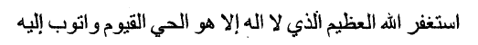

Hâzâ risâle Üskübî merhûm Kadrî Efendi kerîmesi Asiye Hâtûn tarîk-i hakka sülük itdükde 'azizleri âhar diyarda olmagla rû'yâlarını tezkire ile i'lâm itmek iktizası hasebiyle tezkirelerinün müsveddelerini pîştahtalarında hıfz idüp dâui'l-bekâya irtihâl itdüklerinde pîştahtalarında bulunan gendü hattları ile olan nüshalardan tahrîr olındı. Sahha.
________
Sûret-i mektûb. 'İzzetlü sa'âdetlü sultânum efendi hazretlerinün mü- bârek dest-i şeriflerin büs idüp envâ'-i ta'zîm birle du'âlar 'arz olın- dukdan sonra: Benüm sultânum, ma'lûm-i şerîfdür ki bir kaç senedür tarîk-i hakka sülük bî-sebeb gendümüz tâlib olmadın zuhûr itmiş idi.
Ben dahı mümkin oldugı mertebe cehd eyledüm ve şeyhe 'azîm muhabbet itmiş idüm. Tarîkat mûcebince emrine mutî' idüm. Her ne emr itse cândan kabûl iderdüm. Muhkem muhabbetüm ve i'timâdum var idi. Muhabbetüm ve i'tikâdum sebebîle az zamanda iki sene mürür itmedin esrnâ-i seb'ayı tamâm eyledüm. 'Avn-i ilâhî ile her biri bir vechile zuhûr itmişdür. Ve'l-hâsıl kalbüm gözi bir mikdâr açılmaga başlamış idi. Bu hâlde iken hikmetullâh şöyle iktizâ itdi, şeyhümden muhabetüm zâ'il oldı. Bî-sebeb. Anlardan zâhiren ve bâtınen bir keder gelecek nesne yogiken gendü nefsüm kabahatinden muhabbetüm teskîn oldı. Sâ'ir hâlüm dahı tenezzül itdi. Meselâ zulmetde kalmış. Ne kadar ıslâha sa'y itdüm tabîatumı, mümkin olmadı. Bu hâlde gamkîn ve mahzûn iken Uziçe’de Şeyh Muslihüddîn Efendi hazretlerinün muhabbeti kalbüme düşdi. Ve gün begün ziyâde olmaga başladı. Geçende [47a] vâlidüme ikdâm idüp ba'zı behâne ile âdem gönderdük. Mahzâ âşinâlık olsun içün. Hikmet Allâhun, âşinâlık olduktan sonra muhabbet dahı ziyâde olup hattâ şimdi bir mertebe derûnumda gâlibdür ki bir ân bir sâ'at gönlüm anlardan fârig degüldür. Muhabbet gönül tahtında karâr eyledi. Bir mertebe ki mümkin olsa hâk-i kademine cânlar fedâ itmek câna minnetdür. Lîkin anlarun muhabbeti gâlib oldukça evvelki muhabbet teskin oldı. Lîkin yine yeni muhabbet kemendi boynuma bend olmagla yine bir mikdâr evvelki hâlüme 'avdet olur gibidür.
Benüm sultânum, ahvâlümüz budur ki huzûr-i 'izzete i'lâm olm- dı. Sâ'ir ahvâli hâmil-i varaka hâce kadından su'âl buyurun, tafsil eylesün. imdi benüm efendim, lillâhi te'âlâ ve liresûlihî, bu râzum dünyâ ve âhiretde katunuzda emânet olsun. Bir kaç zamân idi ki kalbümde gizli idi. Allâhdan gayri kimse bilmezdi. Şimdi bi'z-zarûre hace kadına işrab olmdı. Zira başum beraberi dostum ve her husûs- da mahrem-i râzumdur. imdi benüm sultânum, dünya ve âhiretde birâderüm olasız. Sizi gendü birâderümden 'azîz bilürem. Benüm sultânum, siz 'âlimsiniz. 'İlın ve 'akıl kuvvetiyle ne ma'kûl görürsiz ve ne nasihat buyurursız? Ahvâlümi 'aziz hazretlerine i'lâm itmek ma' kûl midür yohsa sükût mı evlâdur? Eger mahfi sizün vasıtanuz ile i'lâm itmek ma'kûl ise i'lâm idelüm. Ammâ bolayki mahfi ola. Şeyhümün kalbi bana müntesir olmaya, zîrâ katı çok ihsânın gördüm. Ammâ neyleyim bîihtiyar? Mahfice kâğıd ile i'lâm itsem mi? Benüm sultânum, lillâhi te'âlâ 'ilm 'akıl kuvvetiyle müşkilime bir çâre görün. Tabî'atumda muhkem ıztırâb vardur. Bilmem bu hâl 'alâmeti hayr ınıdur yoksa nefs hîlesi midür? Bîihtiyâr bir hâldür, zuhûr itdi. Benüm sultânum ne buyurursınız? Hâce kadına bildüresiz, bize i'lâm itsün. Cevâba muntazıruz. Öyle ma'lûm-i 'izzet ola. Benüın sultânum, tarîkatnâmelerde görmişem ki bir kimse gendü şeyhinden gayri yire tabî'atı çekinse bâtını hazret-i vâhidiyyeye [47b] açılmaz.
'Acabâ sultânum gendü şeyhümden mi açılmaz yoksa hiç bir ta- rafdan mı açılmaz? 'İlın ile nice bilürsiz? Lutf idüp i'lâm buyurun. Zîrâ ki kalbümde 'azîm ıztırab vardur. Bâkî hirnınet-i 'ilm [ü]ma'ârif mezîd bâd.
Bu risale, Üsküp’lü merhum Kadri Efendi'nin kızı Asiye Hatun hak yola girdiğinde, şeyhleri başka diyarda olduğu için rüyalarını mektupla iletmesi gerektiğinden, öldüğünde yazı tahtasında sakladığı müsveddeler arasında kendi elyazısı ile bulunan sayfalardan kopye edildi.
________
Mektup sureti: İzzetli, saadetli sultanım efendi hazretlerinin mübarek ellerini öper, nice hürmetlerle dualar gönderirim: Benim sultanım, bilirsiniz ki birkaç senedir hak yola giriş, öyle kendiliğinden, biz talip olmadan, gerçekleşmişti.
Ben de mümkün olduğunca uğraştım ve şeyhe çok muhabbet göstermiştim. Tarikatın kuralları gereği emrine itaat ediyordum. Her ne emretse candan kabul ediyordum. Çok sevgim ve güvenim vardı. Bu sevgi ve inanç sebebiyle az zamanda, iki sene geçmeden, yedi ismi tamamladım. Allah'ın yardımı ile her biri bir şekilde ortaya çıkmıştır. Kısacası, kalbimin gözü bir miktar açılmaya başlamıştı. Bu haldeyken, Allah'ın hikmeti, öyle icap etti, şeyhime olan muhabbetim azaldı. Sebebsiz. Onlardan ne açık ne örtülü bana sıkıntı verecek bir şey olmamışken, kendi nefsimin kabahatinden muhabbetim zayıfladı. Sair ahvalim de inişe geçti. Sanki karanlıkta kalmış gibi tabiatıma çekidüzen vermeye ne kadar çalıştıysam da mümkün olmadı. Bu halde gam ve hüzün içindeyken, Uziçe'de Şeyh Muslihüddin Efendi Hazretleri'nin sevgisi kalbime düştü. Ve günden güne artmaya başladı. Geçenlerde meseleyi babama açtım ve bir bahane ile adam gönderdik. Aşinalık olması için. Allah'ın hikmeti, aşinalık olduktan sonra muhabbet arttı, hatta şimdi artık içimi öylesine kapladı ki, bir an bir saat gönlüm onlardan vazgeçmez. Muhabbet gönül tahtına yerleşti. Bir mertebe ki mümkün olsa ayağının bastığı toprağa canımı feda etmek canıma minnettir. Lakin onların muhabbeti yerleştikçe önceki [şeyhe olan] muhabbet zayıfladı. Ama yeni muhabbet kemendi boynuma bağlanmakla yine az biraz evvelki haline dönüş oluyor sanki.
Sultanım, ahvalimiz budur ki yüce huzurunuza bildirildi. Sair ahvali mektubu getiren hoca kadına sorun, anlatsın. Şimdi efendim, Allah için ve Resulü için bu sırrın dünya ve ahirette sizin katınızda emanet olsun. Uzun zamanlar kalbimde gizli idi. Allah'tan başka kimse bilmezdi. Şimdi zorunlu olarak hoca kadına açıldı. Çünkü başımla beraber dostum ve her konuda sırdaşımdır. Şimdi sultanım, –dünya ve ahirette kardeşim olunuz– sizi kendi biraderimden daha aziz bilirim. Benim sultanım, siz âlimsiniz. İlim ve akıl gücüyle neyi makul görürsünüz ve ne önerirsiniz? Ahvalimi şeyh hazretlerine bildirmek mi makuldür yoksa suskunluk daha mı iyidir? Eğer gizlice sizin aracılığınızla bildirmek makulse bildirelim. Ama gizli kalsın. Şeyhimin kalbi bana kırılmasın, çünkü gerçekten çok şeyler verdi. Ama elimde değil ki ne yapayım? Gizlice yazıp bildirsem mi? Benim sultanım, Allah için, ilim ve akıl gücüyle bu derdime bir çare görün. Tabiatımda çok ıstırap var. Bilmem bu hal hayra alamet midir yoksa nefsimin bir hilesi midir? Elde olmayan bir haldir, ortaya çıktı. Benim sultanım, ne buyurursunuz? Hoca kadına bildirin, o bize aktarsın. Cevabınızı bekliyoruz. Öylece malumunuz olsun. Benim sultanım, tarikatnamelerde okudum ki birisinin tabiatı kendi şeyhinden başka yere yönelse, içi birliğe açılmaz.
Acaba sultanım, kendi şeyhimden mi açılmaz yoksa hiç bir taraftan mı açılmaz? İlim sahibi olarak ne dersiniz? Lütfedip bildirin. Zira kalbimde çok ıstırap var. İlim ve maarifiniz bol olsun.
❖
Cevâb-i mektûb. Selâmdan sonra: kadın hazretleri, bu fakîri dünyâ ve âhıret kardaşhga ihtiyâr itmişsiz. Kabûl eyledük. Siz dahı bizüm dünyâ ve âhıret kardaşumuz olasız. Hakk sübhânehû ve te'âlâ cümle ümmet-i Muhammed ile cümlemüzi dünyâdan âhırete îmân-i kâmil ile göçmek müyesser eyleye. 'Arz eyledügünüz ahvâlün küllisi ma'lûm oldı. Ol derûnunuzda gâlib olan 'azîz hazretlerinün muhabbeti güzel hâldür. Allâhü te’âlâ mübârek eyleye. Ve hâlünüzden anlanan oldur ki inşa'allâhu te'âlâ sizün muhabbetünüz 'azîzün kalb-i şeriflerine te'sîr itmişdür. Elhamdülillâhi te'âlâ cânib-i Hakkdan size 'azîm lutf u ihsândur. Ganîmet bilün. Ve Allâhü te'âlâya çok şükr eylen ki ziyâd eyleye. Her kimseye bu mertebe müyesser olmaz. He- mân Hakk sübhânehû ve te'âlâ devâm-i sebât müyesser eyleye. Ve sâlike lâzım olan hernân muhabbet ve i'tikâddur. Allâhü te'âlâ muhabbet ve i'tikâdunuzı ziyâde eyleye. Ve gendü şeyhünüz ile anlarun mâbeyninde fark-ı 'azîm vardur. Hernân geçendeki arkurı yoldan Medîne-i münevvereye vâsıl olmak rû'yânuzdan kıyâs buyurun. Efendi hazretlerinün nice nice ancılayın hulefâsı ve mürîdleri vardur. Hernân Hakk celle ve 'alâ size ve bize dahı çok çok 'azîzün mübarek yüzlerin baş göziyle görmek müyesser ve mukadder itmiş ola. Ve şeyhünüz sizi ol mertebeye dek getürmiş. Andan ziyâdesi inşa'allâh 'azîzden zuhûr idecekdür. Anun içün anlardan muhabbetünüz bir mikdâr kesilmiş. Ve esmâ-i seb'ayı tekmîl itmişsiz ve anlardan murâd ve maksûd olan tezkiye-i nefs ve tasfiye-i kalbdür. Elhamdülillâh müyesser olmış maksuda [vusûl] [48a] vusûl. İnşa'allâhü te'âlâ 'azîz hazretlerinün muhabbeti delîldür. Ve ahvâlünüzi rû'yâlarunuzı 'arz itmek katı ma'kûldur. Hernân maksûdunuz üzre mektûb yazun ve mühürlen. Fakîr dahı bolayki mu'temedün 'aleyh bir âdem ile ir- sâl idebile idüm. Ve gendüye ısmarlayalum ki bu kâğıd katı mahfîdür sizden gayri kimse muttali' olmasın. Ve mukâbelesinde cevâbın i'lâm buyurdukda bir mu'temedün 'aleyh kimse ile fakîre irsal buyurasız ve tenbîh idesiz ki bu fakîrden gayri kimsenün eline degmeye. Ve du'ânuz ricâ iderüz. Bu fakîri du'â-i hayırdan ferâmûş itmeyesiz. Zîrâ kardaşlıkdan murâd oldur ki birbirümüzi du'âdan unutmayayuz. Hakk sübhânehû ve te'âlâ cümle ümmet-i Muhammed ile cümlemüze erenler ve evliyâlar himmetiyle cümle tâliblere murâdât-i maksûdların hayr ile müyesser ve mukadder eylemiş ola. Âmîn bi-hürmet-i seyyidü'l-enbiyâ' ve'l-mürselîn. Temme.
Mektubun cevabı. Selamdan sonra: Kadın hazretleri, bu fakiri dünya ve ahret kardeşliğine seçmişsiniz. Kabul eyledik. Siz de bizim dünya ve ahret kardeşimiz olunuz. Hak sübhanehu ve teala cümle Muhammet ümmeti ile cümlemizin dünyadan ahirete eksiksiz iman ile göçmesini sağlasın. Bildirdiğiniz ahvalin hepsini öğrendim. O içinizi kaplayan aziz hazretlerinin muhabbeti güzel bir haldir. Allahü teala mübarek etsin. Ve halinizden anlaşılan odur ki, inşallahü teala sizin muhabbetiniz azizin yüce kalbine tesir etmiştir. Elhamdülillahi teala Allah canibinden size büyük bir lütuf ve ihsandır, ganimet bilin. Ve Allahü tealaya çok şükür eyleyin ki artırsın. Herkese bu kadar nasip olmaz. Hakk süphanehu ve teala devamını sağlasın. Ve tarikata giren kişiye gereken muhabbet ve inançtır. Allahü teala muhabbet ve inancımızı artırsın. Ve kendi şeyhiniz ile onların arasında büyük fark vardır. Hemen geçenlerde arka yoldan Medine'ye varma rüyanızı hatırlayın. Efendi hazretlerinin onun gibi nice halifeleri ve müritleri vardır. Yüce Allah hem size hem bize azizin mübarek yüzünü kendi gözümüzle çok çok görmeyi nasip etsin. Şeyhiniz sizi bir noktaya kadar getirmiş. Ondan fazlası inşallah aziz [Muslihüddin Efendi] sayesinde gerçekleşecektir. Bu yüzden ondan [yani, önceki şeyhten] muhabbetiniz bir miktar kesilmiş. Yedi ismi tamamlamışsınız, bundan maksat nefsin temizliği ve kalbin arıtılmasıdır. Elhamdülillah maksadınıza varmışsınız. İnşaallahü teala, aziz hazretlerinin sevgisi buna delildir. Ahvalinizi, rüyalarınızı mektupla arz etmeniz gayet makuldür. Hemen istediğiniz üzere bir mektup yazın ve mühürleyin. Fakîr de güvenilir bir kimseyle göndereyim, kendisine de tembih edeyim ki bu kâğıtta yazılanlar son derece gizlidir, başka kimse bilmesin. Karşılığında bir cevap gelince, siz de güvenilir bir kimseyle fakîre gönderin ve tembih edin ki bu fakirden başka kimsenin eline değmesin. Ve duanızı rica ederiz, bu fakîri hayır duadan mahrum etmeyin. Zira kardeşlikten murat birbirimizi duada unutmamamızdır. Hak süphanehu ve te'ala cümle Muhammet ümmeti ile cümlemize, erenler ve evliyalar yardımıyla, cümle taliplere maksatlarına ulaşmayı nasip etmiş olsun. Amin, peygamberlerin efendisi hürmetine. Bitti.
❖
Rû'yâ: 'îd-i şerîfden mukaddem bâzâr irtesi sabah namâzın edâ idüp ta'yîn buyurdukları evrâd-i şerîfi dörtyüz tilâvet idüp işrâk namâzın edâ itdükden sonra bir mikdâr İstirâhat eyledüm. Rû'yâda gördüm ki bir âdem bana dir ki: “Üsküb'den kat'-i 'alâka idüp Uziçe'ye varup ol 'azîzün nikâhına dâhil olmak sana lâzımdur. Hâtûnı yokdur. Sen hâtûn olup hıdınetin eyle. Nikâh olduktan sonra mâbeynünüzde mahremiyet olup mübarek eliyle cismüne dokunup ne kadar emrâz-i bedenîyen var ise zâhiren bâtmen cümle izâle olur. Cemî' murâdâtun hâsıl olur. Kalbün mütesellim olmışdur, hissün dahı hükmine girsin. Elbetde elbetde 'azîzün nikâhına dâhil olmak gerek” diyü bana ikdâm ider. Lîkin söyleyen kimdür fark itmedüm. Hele 'avret degül er âdemdür, bilürem. Anun bu söziden bana hicâb geldi. “Ne sözdür ki dirsin? Benüm muhabbetüm rûhânîdür. Allâhü te'âlânun makbûlü dür. Ol ecilden kalbüm teslîm oldı” direm. Yine ol âdem didi ki: “Ol 'azîzde beşerîyet yokdur. Zâhirde gerçe nâs içinde beşer sûretdedür, ammâ rûh-i sırfdur. Anda hiç beşerîyet [48b] yokdur. Lîkin nikâhına dâhil olduktan sonra mahremiyet olup cismini mesh ider, derdine devâ ve rencine şifâ olur, direm. 'Aklun başında ise fursatı fevt itme” diyü bana tenbîh ider. Fakîre dahı ke-enne nasîhatiyle 'âmil olup, ya'nî Üsküb'de olan 'alâkamı mukatta' idüp Uziçe'ye gitmek tedârikin iderem. Bu hâlile uyandum.
Yine tekrâr uyudum. Yine rû'yâda gördüm ki Uziçe'ye varmışam. Bir yirde 'azîz hazretleri oturur. Ol sakfun altında bir direk vardur ki ol sakfı tutar. Fakîre dahı eyle el baglayup karşusında duraram. Ol direge dayanmış, bir mertebe hicâbla, öninde dururam. Hernân namâzda kıyâma durur gibi. illâ ki 'azîze katı yakın. Bu esnâda ogul- ları geldi. Vardum, ikisinün dahı dest-i şerîflerin bûs idüp ol direk yanına geldüm. Öninde dururken uyandum.
Rüya: Bayramdan önceki Pazartesi sabah namazını kılıp [şeyhin] tayin ettikleri evrad-ı şerifi dört yüz kere okuyup işrak namazını kıldıktan sonra biraz dinlendim. Rüyada bir adam gördüm, bana: “Üsküp'le alakanı kesip Uziçe'ye gitmen ve o azizin nikâhına girmen gerekir. Hatunu yoktur. Sen hatunu olup hizmet et. Nikâhtan sonra aranızda yakınlık olur, mübarek eliyle cismine dokunur ve ne kadar beden rahatsızlığın varsa gerek yüzeyde gerek içinde olsun hepsi geçer. Bütün dileklerin yerine gelir. Kalbin teslim olmuştur zaten, duyuların da onun hükmüne girsin. Elbette azizin nikâhına girmen gerekir” diyerek yön veriyor. Bu konuşanın kim olduğunu çıkaramadım, yalnız kadın değil erkekti. Onun bu sözü beni utandırdı. “Nasıl söz bu? Benim sevgim ruhanidir. Allahü tealanın makbulüdür. O yüzden kalbim teslim oldu,” dedim. Yine o adam dedi ki: “O azizde beşerlik yoktur. Gerçi görünüşte halk arasında insan görünümündedir, ama sırf ruhtur. Onda hiç beşerlik yoktur. Ama nikâhına girdikten sonra aranızda yakınlık olur, senin bedenine elini sürer, derdine devam, yarana şifa olur, diyorum. Aklın başında ise fırsatı kaçırma” diye bana tembih etti. Fakire de sanki onun nasihatine göre davranıp, Üsküp'le ilişiğimi kesmeye ve Uziçe'ye gitmeye hazırlanırken bu hal ile uyandım.
Yine tekrar uyudum. Yine rüyada gördüm ki Uziçe'ye varmışım. Bir yerde aziz hazretleri oturuyor. Ol kerevetin altında bir direk var ve kereveti tutuyor. Fakîre de öyle el bağlamış vaziyette karşısında duruyorum. O direğe dayanarak, biraz hicap içinde, önünde duruyorum, sanki namazda kıyama durur gibi. Ancak azize bayağı yakın. Bu esnada oğulları geldi. Vardım, ikisinin de mübarek ellerini öptükten sonra yine o direğin yanına geldim. Önünde dururken uyandım.
❖
Yine bir gün bu tahayyür ile gendü hâlüme ta'accüb iderken gaflet aldı. Yine gördüm 'aziz bana hitâb idüp buyurur ki: “Seveni biz dahı severüz. Bize 'âşık olana biz dahı âşık oluruz. Âşık olduğumuz kimseyi bermurâd iderüz” diyü buyururlar. Keenne bana bir safâ gelüp uyandum.
Yine bir gün bu şaşkınlık ile kendi halime hayretlenirken bir gaflet aldı. Yine gördüm aziz bana hitap edip buyurur ki: “Seveni biz de severiz. Bize âşık olana biz de âşık oluruz. Âşık olduğumuz kimseyi muradına erdiririz.” Bana âdeta bir safa geldi, uyandım.
❖
Yine bir kerre beni gaflet alup hayâli müşâhede olınup buyurur ki: “Evvel biz sana muhabbet eyledük. Veli Dede'nün elinden seni biz alduk. İhtiyârun elünde degüldür. Bizden muhabbet zuhûr idüp sana nakl eyledi” diyü buyurdı. Ekser hayâli müşâhede-i kalb oldukda tebessüm ile hakir[eye?] nazar iderler gibidür.
Yine bir kere beni gaflet aldı ve [şeyhin] hayali göründü. Buyurdu ki: “Önce biz sana muhabbet eyledik. Veli Dede'nin elinden seni biz aldık. İraden elinde değil. Muhabbet bizden çıkıp sana naklonuldu.” Çoğu zaman hayali kalp gözüyle müşahede olunduğunda tebessüm ile bakar gibi geliyor.
❖
Ba'dehu bir gice bir mikdâr gaflet[d]e gördüm ki efendi hazretleri gelmiş. Mübârek sinesin açdı. Görürem, sine-i mübârekinde güneş mesâbesinde bir âyine vardur. Güneş gibi müdevver, nûrâniyeti ziyâde, rengi gâyet mücellâ, musaffa altuna benzer. Ol âyinenün nûn mübârek beyaz sakalınun arasından taşra çıkar, şu'le virür. Bir âyi- nedür ki tabiri mümkin degüldür. Ve'l-hâsıl dünyâda bir nesneye benzemez. Müdevverligi güneşe benzer, ammâ nûrâniyeti güneş gibi degül. Bir ['acâ'ib] [49a] 'acâ'ib nesne ki göz görmiş degüldür. Ya'ni ol âyine mübârek gögsinde bünyâd olmışdur. Âriyeti komak degüldür. Hernân cism-i mübârekindendür. Ol âyine[yi] bana göste- rüp buyurdı ki: “Bu âyine içine bakan kimse cemâl-i hazret-i Al- lâh[ı] müşâhede ider” diyü buyurdı. Ba'dehu mübârek sinesin örtdi. Ammâ hakire içine bakmadum. Lîkin âyine[yi] gördüm. Ba'dehu beni önine getürüp mübârek boynından ridâsın bir ucın gendü tutup bir ucın bana tutdurup bî'at virdi. Âdet üzre Halveti şeyhleri nice bi'at virürse evvel istigfâr du'âsın okudup ba'dehû tevbe âyetin oku- dup ba'dehû şehâdet getürüp telkin eyledi. Buyurdı ki: “Ta'yin eyledüm ki dörtyüz evrâd-ı şerife müdâvemet idesin. İstigfâr -bu minval üzre:

-andan salavât-i şerîf, andan fâtiha andan ihlâs-i şerîf okuyasın. İş- râk namâzın ve subhî namâzın bizüm usûlümüz üzre kılasın. İşrâk namâzın altı rek'at kılup iki rek'at salavâtü'l-İşrâk iki rek'at isti'âze iki dahı istihâre kılasın. Subhî namâzın dört rek'at kılasın. Tevhide meşgûl olasın. İsimleri dahı evvelki usûl üzre müdâvemet idesin, bizde dahıeyledür” diyü buyurdılar. Ba'dehu el kaldurup du'â itdiler. Hakîre dahı mübârek dilmenin öpdüm. Ürş kere mübârek eliyle ba- şumı sıgadı. “Şimdiden sonra sen benümsin” diyü buyurdı. Bu sürûr ile uyandum. Ammâ katı muhkem uyumaz idüm. Ke-enne hernân âşikâre gibi vâki' oldı. Elhamdülillâhi te'âlâ bir ân bir sâ'at gönlüm anlardan fârig degüldür. Dâ'imâ hayilli müşâhede-i kalb oldukda nice dürlü işâretler vâki' olur. Bu kadar i'lâm olındı. Temme.
Sonra bir gece bir miktar gaflet sırasında gördüm ki Efendi Hazretleri gelmiş. Mübarek göğsünü açtı. Gördüm ki mübarek göğsünde güneş gibi bir ayna var. Güneş gibi yuvarlak, çok ışıklı, rengi gayet parlak, altına benziyor. O aynanın ışığı mübarek beyaz sakalının arasından çıkıyor ve şule veriyor. Öyle bir ayna ki tabiri imkânsız. Kısacası, dünyada bir şeye benzetemem. Yuvarlaklığı güneşe benziyor ama ışıltısı güneş gibi değil. Bir acayip nesne ki göz görmüş değil. Yani o ayna mübarek göğsünde kurulmuş, geçici olarak oraya konmuş değil. Sanki mübarek cisminden oluşmuş. Aynayı bana gösterip buyurdu ki: “Bu aynanın içine bakan, Hazreti Allah'ın cemalini görür.” Sonra mübarek göğsünü örttü. Ama hakire içine bakmadım, ancak aynayı gördüm. Sonra beni önüne getirip mübarek boynundaki şalın bir ucunu kendi tutup bir ucunu da bana tutturup biat verdi. Halveti şeyhleri âdetlerince el vererek telkin eyledi: Önce istiğfar duasını sonra tövbe ayetini okutup sonra da şehadet getirip buyurdu ki: “Dört yüz evrad-ı şerif oku. İstiğfar -bu şekilde:
“Estağfurullahi'l-azîm ellezî lâ ilâhe illa hüve'l-hayyül-kayyûm ve etibu ileyh”
--ondan sonra salavat’ı şerif, sonra Fatiha sonra da İhlas-ı şerif oku. İşrak ve sabah namazını bizim usulümüz üzere kıl. İşrak zamanı altı rekât kılıp iki rekât işrak namazı iki rekât istiaze iki de istihare kıl. Sabah namazını dört rekât kıl. Tevhide devam et. İsimleri de evvelki gibi sürdür, bizde de aynıdır.” Sonra ellerini kaldırıp dua ettiler. Hakire, mübarek eteğini öptüm. Üç kere mübarek eliyle başımı sıvadı. “Şimdiden sonra sen benimsin,” diye buyurdu. Bu sevinçle uyandım, ama sıkı sıkıya uyuyor değildim, sanki gözümün önündeymiş gibi oldu. Elhamdülillahi teala bir an bir saat gönlüm onlardan vazgeçmez. Hayali kalp gözüne düştüğünde, daima nice türlü işaretler olur. Bu kadar ilam olundu. Bitti.
❖
Dîger: Bizüm 'Alî Çelebî gitdükden sonra yedinci gice rû'yâda gördüm ki bir kimse gelüp bana dir ki: “Senün hânende define zuhûr eyledi”. Fakîre dahı [49b] 'azîm mesrûr olup ol mevzi'e varup gördüm ki bir câhun agzına yekpâre bir mermer komışlar. “Define bunun altındadur” dirler. Ben dahı merrneri kaldurup câhun içine bak- dum. Bir nerdübân gördüm. Nerdübândan. aşaga inerken bir latîf rûzgâr eser ki câna safâ virür, ta'bîr olmaz. Bu mevzi'de rûzgâr kandan gelür diyü ta'accüb iderken bir kimse dir ki: “Bu rûzgâr Medîne'den gelür. Bu yol Medîne yolıdur ve ravza-i şerîf yakındur” didiler. Benüm tahayyürüm dahı ziyâde oldı. Nerdübânun nihâyetine geldükde bir latîf çeşme, kuma mesâbesinde yapılmış. Katı latîf a'lâ suyı var ki âb-i hayâta benzer. Andan bir mikdâr su içdüm. Dahı biraz gitdükde bir a'lâ bâgçe gördüm. Bâgçe hâ. Mukâbelesinde Ravza-i Resûlullâh. “İşte bu bâgçe Medînedür, işte Ravza” didiler. Fakîre dahı şevkümden serâseme gibi olup Ravza-i şerife yüz sürüp gözüm yaşın tazarru' ve niyâz idüp 'isyânum yâd idüp şefâ'at taleb idüp recâ iderüm. “Şefâ'at yâ habîbullâh” diyü derdle gözyaşların dökerüm. Hattâ bir iki beyit okurum. Beyit: evvel ü âhır vücûdundur sebeb her devlete / el-meded ey destgîr-i evvelîn vü âhırîn / haşre tah sis itme sultânum şefâ'at-kârını / 'âlem-i dünyâda da ol destgîr-i 'âcizîn. Okuduğum beyit budur. Ba'dehu murâdumca tazarru' niyâz itdükten sonra geldügüm yoldan yine taşra hânerne çıkdum. Ol câhun agzını yine mermer ile kapadum. Ya'nî kimse vâkıf olmaya. Bir nâ- dân ona yol bulmaya. Mahsûs gendüm içün hıfz eyledüm. Bir mertebe mesrûr oldum ki dünyada öyle sürür olmak mümkin degüldür. Ya'nî öyle yâdigâre lâyik oldum ki günde on kere murâd itsem Rav- za-i şerife yüz sürmek mümkindür. Ta'accüb eyledüm ki Medîne-i şerif bu kadar mesâfe-i ba'îd iken nice yakın oldı. Bu esnâda bana bir kimse dir ki: “Bu yol Medîne'ye arkurı yoldur. Gayrı yolı altı ay- lıkdur, ammâAllâhü te'âlâ sana bu arkurı yolı virdi. Kaç kerre istersen varmak mümkindür” diyü. Bu safâ ile [50a] sürür ile uyandum.
Bir diğeri: Bizim Ali Çelebi gittikten sonra yedinci gece rüyada gördüm ki birisi gelip bana şöyle dedi: “Senin evinde define çıktı.” Fakire, çok sevindim ve oraya vardım, gördüm ki bir yerin ağzına bir mermer koymuşlar, “define bunun altında” dediler. Ben de memeri kaldırıp yerin içine baktım. Bir merdiven gördüm. Merdivenden aşağı inerken hoş bir rüzgâr esti ki cana zevk verir, anlatması imkânsız. Orada durmuş “bu rüzgâr nereden geliyor?” diye şaşırmışken birisi dedi ki: “Bu rüzgâr Medine’den geliyor. Bu yol Medine yoludur. Ve o mübarek kabir [Hazret-i Muhammed'in kabri] yakındır.” Benim şaşkınlığım iyice arttı. Merdivenin sonuna gelince hoş bir çeşme gördüm, kuma gibi yapılmış. Çok iyi, çok tatlı suyu vardı ki, hayat suyuna benziyordu. Biraz su içtim. Biraz ilerlediğimde güzel bir bahçe gördüm. Bahçe ha. Karşısında resulullahın kabri. “İşte bu bahçe Medine'dir, işte Ravza” dediler. Fakîre, şevkimden sersem gibi olup mübarek Ravzaya yüz sürüp gözyaşları içinde niyaz edip isyanımı hatırlayıp şefaat diledim. “Şefaat ya habibullah” diye dertli gözyaşları döktüm. Hatta bir-iki beyit okudum. Beyit: Evvel ü âhır vücudundur sebeb her devlete / el-meded ey destgîr-i evvelin vü âhirin / haşre tahsis itme sultânum şefâ'at-kârını / 'âlem-i dünyâda da ol destgır-i 'âcizın. Okuduğum beyit buydu. Sonra dilediğimce af ve merhamet dileyerek yalvardıktan sonra geldiğim yoldan yine dışarı evime çıktım. O yerin ağzını yine mermerle kapadım. Yani kimse öğrenmesin. Aptalın biri ona yol bulmasın. Özel olarak kendime sakladım. Öyle sevindim ki dünyada böyle sevinmek mümkün değildir. Yani öyle bir yadigâra eriştim ki günde on kere istesem o mübarek mezara yüz sürmek mümkün olacak. Medine'nin o kadar uzak mesafedeyken böyle yakın olmasına şaştım kaldım. Bu esnada biri bana der ki: “Bu yol Medine'ye arka yoldur. Öteki yolu altı ay çeker ama Allahü teala sana bu arka yolu verdi. Kaç kere istersen varmak mümkündür.” diye. Bu keyifle bu sevinçle uyandım.
❖
Yine bir defa: Rû'yâda gördüm ki dahı bile bir iki hâtûnlar vardur. Bana dir ki: “Ben seni bir âdeme nikâh eyledüm. Bu hâtûnlar anun cânibinden gelmişdür. Bunlara şerbet virmek lâzımdur” dir. “Ol âdem sipâh cinsinden bir kimsedür” dir. Bana ziyâde ıztırâb geldi. “Bana er lâzım degüldür, ana varmam” diyü katı mücâdele eyledüm. Sonra, ol hâtûnlar gitdükden sonra, merhûm Veysî Efendi ol mahalde hâzır oldı. Benüm ıztırabumı gördükde bana hitâb eyledi: “Kızum zinhâr elem çekme. Ol ma'hûd âdeme seni kimse vermege kâdir degüldür. Ammâ ben seni Allâhun emri peygamberün sünnetiyle Uziçe'de Şeyh Muslihüddîn Efendi hazretlerine 'akd-i nikâh eyledüm. Minba'd elem çekme. Mutlak ana tezvîc eyledüm” dir. Veysî Efendi'nün bu cevâbından 'azîm mesrûr oldum. Keenne tahkîk anlarun taht-i nikâhında oldum bilüp bu safâyile uyandum.
Yine bir kere rüyada gördüm ki birlikte bir-iki hatun var. Bana diyor ki: “Seni birisine nikâhladım. Bu hatunlar onun tarafından gelmiştir. Bunlara şerbet vermek gerekir. Adam sipahi zümresinden birisi.” Bana ıstırap bastırdı. “Bana adam gerekmez, ona varmam” diye sıkı mücadele ettim. Sonra o hatunlar gittikten sonra merhum Veysî Efendi orada bulundu. Benim ıstırabımı görünce bana hitap ederek: “Kızım sakın elem çekme. Kimse seni o adama vermeye kadir değildir. Ama ben seni Allah'ın emri peygamberin sünnetiyle Uziçe'de Şeyh Muslihüddin Efendi hazretlerine nikâhladım. Artık elem çekme. Mutlaka onunla evlendirdim,” dedi. Veysi Efendi'nin bu cevabına çok sevindim. Gerçekmiş gibi, kendimi onunla nikâhlı bilip bu safa ile uyandım.
❖
Yine bir defa: Yine bir gice rû'yâda Hazret-i Habîbullâh[ı] gördüm. Hilye-i şerîfleri şeklinde. Ol mübârek alnında nûrını bile. Ya'ni Mi'râca çıkarmış. Burâka binmiş. Melâ'ike-i mukarrebîn cevânib-i erba'asında bögrişüp nidâ iderler ki: “Hâzâ hâtemü'l-enbiyâ, hâzâ sirâc-i beşîrü'n-nezîr, hâze Muhammed el-mustafâ salla'llâhu 'aleyhi ve sellem” diyü Habîbullâhı Mi'râca çıkarurlar. Evc-i a'lâya hurûc iderken uyandum. Şimdi Receb ayında, Mi'râc gicelerinde gördüm.
Yine bir defa: Yine bir gece rüyada Hazret-i Habibullahı [Hazret-i Muhammed'i] gördüm. Hilye-i şeritlerindeki gibi. O mübarek alnındaki nuru ile. Mirac'a çıkarken, Burak'a binmiş olarak. Dört bir tarafında melekler bağrışıp sesleniyorlardı: “Bu, peygamberlerin mührü [yani sonuncusu], insanları doğru yola sevk edenlerin meşalesi; bu, Muhammed Mustafa (s.a.s.)” diyerek Hazret-i Muhammed'i Mirac'a çıkarıyorlardı. En üst cennete çıkarlarken uyandım. Şimdi Recep ayında Mirac gecelerinde gördüm.
❖
Yine bir defa: Yine bir gice gördüm ki bir hûbn1 hâtûn. Katı tâze degül. Kim idügin bilmem. Lîkin Üsküb âdemine benzemez. Bir kimse gelüp bana didi ki: “Bu hâtûn 'azîz hazretlerinün hâtûnı, ogullarınun vâlidesidür. Anlardan degüldür”. Fakîre dahı 'azîm hicâb eyledüm. Bilmeyüp ri'âyetde kusûr eyledügüme ’özür iderken ol hâtûn bana dir ki: “Yakın gel. Kulagına bir iki söz söyleyeyim, kimse işitmesün”. Ben dahı yakın geldükde kulaguma söyleyüp dir ki: “Efendi sana vâfir selâmlar ve du'âlar eyledi. Hem buyurdı ki: “Sana müjde olsun. Senün rûhını yaramaz işden geçürdük. Meselâ [50b] hamr gibi. Dahı anun emsâli ne ise, ol yaramazlıkdan geçürdük. Minba'd hâtırun hoş tutasın” diyü haber virdükde ’azîm mesrur oldum. El- hamdülillâhi te'âlâ böyle olmış. Anlar ki kutbü’l-aktâbdur, anlara bu kadar nesne çokdegüldür. Anlara âşinâlık itdükde cümle murâdum hâsıl olmasına kalbüın şehâdet iderdi. “Elhamdülillâh zuhûr eyledi” diyü bu sürür ile uyandum.
Yine bir defa: Yine bir gece güzel yüzlü bir kadın gördüm. Pek genç değil. Kim olduğunu bilmiyorum. Ama Üsküplü'ye benzemiyor. Birisi gelip bana dedi ki: “Bu kadın, aziz hazretlerinin karısı, oğullarının annesidir. Onlardan değildir.” Fakîre bayağı utandım. Bilmeden saygıda kusur ettiğime özür dilerken, o kadın: “Yaklaş. Kulağına bir-iki söz söyleyeyim; kimse işitmesin” dedi. Ben yaklaşınca kulağıma şunu söyledi: “Sana müjde olsun. Senin ruhunu yaramaz işlerden geçirdik. Mesela içki gibi. Daha onun gibi ne varsa, o yaramazlıklardan geçirdik. Şimdiden sonra hatırını hoş tut.” diye haber alınca çok sevindim. Elhamdülillahi teala böyle olmuş. Onlar ki kutupların kutbudur, onlara böyle işler çok değildir. Onlara aşinalığı sürdükçe bütün dileklerimin gerçekleşeceğine kalbim şehadet ediyordu. “Elhamdülillah gerçekleşti” diye bir sevinçle uyandım.
❖
Yine bir gice: Rû'yâda gördüm ki bir kaç bed-çehre 'avretler. Gözleri a'mâ. Dahı bir 'avret ol a'mâ 'avretün önine oturup keenne gözlerine 'ilâc ider gibidür. Ol a’mâ ’avretden kalbüme kerâhat gelüp '“aceb kimdür” diyü tefekkürde iken ol 'avret söyleyüp bana dir ki: “İşte dünyâ benüm. Bil ve âgâh ol”. Bunı bildükde bana gazab müstevlî olup 'avrete şetm-i 'azîm idüp: “Bre rnekkâre tarrâre sahrâre (sahhâre?), bre velîler aldayıcı, sükker gösterüp zehir içürici. Yıkıl git, yanuma gelme. Benüm kardaşlamın sana kâbîn idüp yine tiz talâk virdiler. Ammâ ben sana kâbîn kıymadum ki talâk virem. Yüri git yakınuma gelme” diyü muhkem tenbîh iderken, ol mel'ûne bana dir ki: “Eger bana muhabbetün olmasa kırmızı atlas hâtıruna hoş gelmezdi” diyü bana söyler. Bana da ziyâdegazab müstevlî olup bu gazab ile uyandum. Bu vâkı'anun dahı tafsîli vardur.
Yine bir gece: Rüyada gördüm ki birkaç berbat suratlı kadın. Gözleri kör. Bir kadın o kör kadının önüne oturmuş sanki onun gözlerine ilaç sürüyor gibi. Kör kadından kalbime sıkıntı geldi, “Acaba kimdir” diye düşünürken karı dedi ki: “İşte dünya benim. Bil ve öğren.” Bunu öğrenince bana gazap geldi, karıya ciddi küfredip: “Bre mekkâre, tarrâre, sahrâre., bre veliler aldatıcı, şeker gösterip zehir içirici. Yıkıl git, yanıma gelme. Kardeşlerim sana nikâh kıyıp sonra tez elden boşadılar, ama ben sana nikâh kıymadım ki boşayayım. Yürü git, yakınıma gelme,” diye sıkı sıkı tembih ederken, o melune bana “Eğer bana muhabbetin olmasa kırmızı atlastan hoşlanmazdın” diye seslendi. Bayağı bir gazaba kapıldım. Bu gazapla uyandım. Bu düşün daha çok ayrıntısı var.
❖
Bir kaç defa vâki olmışdur ki ismullâha müdâvemet iderken, gaflet müstevlî olur gibi, 'azîz hazretlerini kalbüm göziyle müşâhede idüp biz ism-i evveli sürerken, anlar mukâbilde ism-i sânî, ki “Allâh”dur, müdâvemet iderler. Bunlara hâtıradur diyü mukayyed olmadum.
Bir kaç defa öyle oldu ki ismullahı zikre devam ederken gaflet geldi gibi oldu. Aziz hazretlerini kalp gözüyle gördüm. Ben birinci ismi sürerken onlar karşılarında ikinci isme –ki Allah'tır– devam ederler. Bunları zihin oyunudur diye fazla ciddiye almadım.
❖
Yine bir defa ismullâha müdâvemet iderken gaflet havâle olur gibi oldı. Keenne sag cânibümden bir kirnesne bir murassa' hançer virdi. Kabzası beyaz, galiba ya incû ya cevher elmasdur. Kım dahı murassa'. Gendümi cem' idüp gözüm [açdum?], nesne yok.
Yine bir defa ismullahı zikre devam ederken kendimi kaybeder gibi oldum. Güya sağ tarafımdan birisi bir mücevherli hançer verdi. Kabzası beyaz, galiba ya inci ya elmas cevherinden. Kını da mücevherli. Kendimi toparladım, gözümü açtım. Hiçbir şey yok.
❖
Yine gaflet müstevli oldı. Yine gördüm ki bir kimesne. Bir altun tabak [içinde) [5 la] içinde bir murassa' bıçak ve bir murassa' hançer ve bir murassa' kılıç önümde kodılar. 'Acâ'ib tuhfe ki gözler görmiş degül. Bundan bir mehâbet gelüpgendümi cem' idüp, hiçbir nesne yok.
Yine gaflet geldi. Yine gördüm, birisi var. Bir altın tabak içinde bir mücevherli bıçak ve bir mücevherli hançer ve bir mücevherli kılıç koydular önüme. Acayip nadide bir şey ki gözler görmüş değil. Bundan bir huşu gelip kendimi toparladım, hiçbir şey yoktu.
❖
Ba'dehû yine bir defa ismullâha müdâvemet iderken gaflet olur gibi oldum. Efendi hazretleri karşumda zâhir olur gibi hayâli musavver oldı. İsm-i evveli fakire müdâvemet iderken anlar ism-i sânîye müdâvemet iderler. Hattâ lafz-ı Allâhı tamâm eyledükde mübârek agızlarından güneş mesâbesinde bir nûr çıkar, yukaru gider. Ba'zı üzerlerine dökülür gibi, üzerlerine altun saçılur gibi gelür. Her bâr ism-i şerîfi tamâm itdükde, böyle fakîre ism-i evveli tamâm itdükde, anlar ism-i sânîyi tamâm iderler. Bu hâlde iken uyanur gibi oldum. Bir iki defa Hazret-i Habîbullâhı 'âlem-i rû'yâda gördüm. Efendi hazretleri ile bir yirde otururlar. Çak diz-be-diz olup otururlar. Ke- enne hazret buyurur ki: “hâ-ene Muhammed, hâtemü'n-nebiyyîn. Hâze Muslihüddin, mahbûb-i hüdâ, mâ'şûk-i enbiyâ. Temme.
Sonra yine bir defa ismullahı zikre devam ederken gaflet gelir gibi oldu. Efendi hazretleri karşımda belirir gibi hayali biçimlendi. Fakîre birinci ismi sürerken o ikinciyi sürüyor. Hatta Allah sözünü tamamladığında mübarek ağızlarından güneş gibi bir nur çıkar yükselir. Bazen de üzerlerine dökülür gibi, üzerlerine altın saçılır gibi iner. Her defa kutsal ismi tamamladıkça, böyle fakîre birinci ismi tamamladıkça o ikinci ismi tamamlıyor. Bu halde iken uyanır gibi oldum. Bir iki defa hazret-i peygamberi rüya âleminde gördüm. Efendi hazretleri ile bir yerde oturuyorlar. Böyle diz dize oturuyorlar. Güya hazret buyurdu ki: “İşte ben Muhammed, peygamberlerin sonuncusu. Bu da Muslihüddin, Hüda'nın sevdiği, nebilerin âşık olduğu.” Bitti.
❖
Yine bir defa: Cum'a gicesi ahşam namâzın kılarken efendi hazretleri kalbümde mutasavver olup kalbüm göziyle müşâhede iderem. Hitâb idüp buyurdılar ki: “Namâzdan sonra ism-i sânîye mübâşeret eyle. Vakit mübârekdür”. Fakîre dahı namâzı tamâm idüp karşudan ta'lîm ider gibi evvelki ismi üç kerre didükden sonra “rabbenâ tekabbel [ve] 'âteynâ” âhıra dek okıyup fâtiha-i şerîf[e] okuyup el yüze sürüp, ba'dehû. buyurdılar ki: “Di imdi. Allâhun 'inâyeti ve Resû- lullâhun mu'cizât-i kesîrü'l-berekâtı ile ve bizüm icâzetümüz ile sana ism-i sânîye izin verildi. Allâh mübârek eyleye” diyü. Karşudan fakîreye usûli üzre ta'lîm buyurdılar ki bir kaç kerr[e] didükden sonra du'â eylediler. Ba'dehû buyurdılar ki: “Sen bana sâ'irler gibi degülsin. Muhabbet hernân sende midür? Bil ki [51 b] bizde on mertebe ziyâdedür. Tereddüdi defeyle” diyü buyurdılar Zîrâ fakîrede tereddüd var idi.
Yine bir defa Cuma gecesi akşam namazını kılarken efendi hazretlerinin tasviri kalbime düştü, kalp gözüyle gördüm. Şöyle seslendiler: “Namazdan sonra ikinci isme başla. Vakit mübarektir”. Fakîre de namazı tamamlayınca karşıdan ders çalıştım gibi birinci ismi üç kere tekrarladıktan sonra “Rabbena tekabbel [ve] ateyna”yı sonuna kadar okuyup, bir de Fatiha'yı okuyup, ellerini sürüp, buyurdular ki: “Şimdi söyle. Allah'ın yardımı ve resulullahın bol bereketli mucizeleri ile ve bizim icazetimiz ile sana ikinci isme izin verildi”. Karşıdan fakîreye usulüne göre yapılacağını birkaç kere tekrarlayarak gösterdikten sonra dua ettiler. Sonra buyurdular ki: “Sen bana ötekiler gibi değilsin. Muhabbet yalnız sende midir? Bil ki bizde on misli fazlası vardır. Tereddüdü gönlünden kov.” Zira fakîrede tereddüt vardı.
❖
Yine bir gice: Teheccüd namâzın edâ idüp İsmullâha müdâvemet iderken gaflet müstevli olup efendimüz hazretlerini 'âlem-i bâtında müşâhede idüp keenne buyurdılar ki: “Sana itdügüm muhabbeti mahlûk kısmından bir kimseye itmedüm”. Ba'dehû fakîrenün hâtıruma hutûr eyledi ki bende mücâhede yok. Ke-enne bunlar hâlüm de- gül diyü kalbüme tereddüd geldi. Ba'dehû buyurdılar ki: “Benüm mücâhede eyledügüm senündür”. Bu esnâda fakîrenün hâtıruma hutûr eyledi ki el'iyâzu billâh 'ucb kalbüme yürünmesün diyü bir havf geldi. Ba'dehû buyurdılar ki: “Kalbüne 'ucb gelse elüm ile men' iderem. Gönlün benüm hükmümdedür. İstedügüm nesneyi gönlüne komam” diyü buyurdılar.
Yine bir gece teheccüd namazını kıldıktan sonra İsmullahı sürüyorken gaflet geldi, iç âleminde efendimiz hazretlerini gördüm. Güya buyurdular ki: “Sana gösterdiğim muhabbeti başka hiçbir Tanrı kuluna göstermedim.” Sonra fakîrenin aklıma geldi ki nefsimle yeterince cihad etmedim. Sanki bunlar benim halim olamazmış gibisinden kalbime tereddüt geldi. Bunun üzerine buyurdular ki: “Benim ettiğim cihad senindir.” Bu esnada fakîre düşündüm ki Allah korusun kalbimi mağrurluk kaplamasın diye bir korku geldi. Bunun üzerine buyurdular ki: “Kalbine gurur gelse elimle engellerim. Gönlün benim hükmümdedir. İstediğim şeyi gönlüne koyarım.”
❖
Yine bir defa İsmullâha müdâvemet iderken ke-enne bir kâse ile su getürdiler. İçer gibi oldum. Nazar itdüm, kâse içinde su meger altun imiş. Altunı içdüm. Efendi hazretleri buyurdılar ki: “Sıhhatler 'âfiyetler olsun”. Ba'dehû Ramazân-i şerîfün evvel gicesi terâvîh kılur- ken kalbüm imârnet idüp fakîre ardında namâz kıluram. Çok cemâ'at bile. Ba'dehû oturup tesbîh okurken efendi hazretlerini kalbüm göziyle müşâhede iderem. Ke-enne buyurdı ki: “Nicesin hasret-i firâkum ile, nicesin nâr-i iştiyâkum ile”. Ba'dehû buyurdılar ki-: “Sen bilür misin benüm nemsin? Nûr-i dîdem, servet-i sînemsin.”
Yine bir defa: Allah'ın ismini zikre devam ederken güya bir kâse ile su getirdiler. İçecek gibi oldum, baktım, kâse içindeki su meğer altınmış. Altını içtim. Efendi hazretleri buyurdular ki: “Sıhhatler afiyetler olsun.” Sonra Ramazan-ı şerifin ilk gecesi teravih namazını kılarken kalp gözüyle öyle gördüm ki efendi hazretleri önümde imamlık ediyor, fakîre arkasında namaz kılıyorum. Çok cemaat var. Sonra oturmuş tesbih okurken efendi hazretlerini kalp gözüyle gördüm. Güya buyurdu ki: “Nicesini aynlığımın hasretiyle, nicesini özlemimin ateşiyle.” Sonra buyurdular ki: “Sen bilir misin benim nemsin? Gözümün nuru, sinemin servetisin.”
❖
Yine bir defa: Âlem-i bâtında efendi hazretlerini [gördüm]. Buyurdılar ki: “Âlem-i dünyâ hankâhullâhdur, hâdim bizüz”. Fakîrenün hâtıruma geldi ki hazret-i Mevlânâ bu kelâmı dimişdür. Yine tekrâr buyurdılar ki: “Mevlânâ hayâtda olaydı, hâşiyem [gâşiyem?] götürmegi cânına minnet bileydi”.
Yine bir defa: İç âleminde efendi hazretlerini gördüm. Buyurdular ki: “Dünya âlemi Allah'ın hankâhıdır, hizmetçisi biziz.” Fakîrenin aklına geldi ki bu sözü Hazret-i Mevlana söylemiştir. Yine buyurdular ki: ''Mevlana hayatta olsaydı hâşiyem [gâşiyem?] götürmeyi canına minnet bilseydi.”
❖
Yine bir defa: Ramazân-i şerîfün âhır Cum'a gicesi 'âlem-i bâtında Habîb-i Ekrem (salla'llâhu 'aleyhi ve sellem) hazretlerini müşâhede idüp ya'nî bu mahalde efendi hazretleri karşudan zâhir oldı. Hazret buyurdı ki: “Merhabâ yâr-i men, [cân-i men] [52a] cân-i men. Mah- bûb-i hüdâ, ma'şûk-i enbiyâ”. Ya'nî efendi hazretleri Habîb-i Ekrem hazretlerinün yanında oturdılar. Habîb-i Ekrem hazretleri mübârek elin efendi hazretlerinün omuzına koyup, “hâze kutbü'l-aktâb” buyurdılar. Hem ol mevzi'de dahı âdemler vardur, ya'nî anlara bildirür gibi. Bundan sonra uyudum. Âlem-i rfi'yâda görürem ki bir bâgçe. Agaçları, otları kurumış. Bir bed-zemîn ki olmaz. Bunun içinde yılanlar var imiş. Bu bâgçeden kalbüme bir mertebe nefret gelür. Ve bu yılanlardan dahı havf iderem kazâ ile biri sokmasun diyü. Bu esnâda karşumda bir âdem zâhir oldı. Yanında bir tâze oglan var. Ol âdeme minnet iderem ki bu oglana tenbîh ide, ol bâgçede kurnmış agaçları otları biçüp kesüp gidere. Bu ıztırâbla uyandum. Kalbümde 'azîm keder zuhûr eyledi. Ol bâgçede olan hâr ü hâşâk benüm 'amelüm, ol yılanlar nefs-i emmâremdür, diyü melûl mahzûn teheccüd narnâzına müdâvemete meşgûl oldum, ammâ kalbümde şevk yok. Hâtıruma gelür ki mukaddem böyle görem sonra bum görrnek [?] ma'lûmdur ki bunlar benüm hâlüm degüldür, diyü kalbüme tereddüd geldi. Hele namâzı tamâm idüp ism-i şerîfi müdâvemete meşgûl oldum. Âlem-i bâtında efendi hazretlerini kalbüm göziyle müşâhede eyledüm. Buyurdılar ki: “Ol gördüğün bâgçe dünyâdur. Ol içinde olan yılanlar dünyânun mâl [ü] metâ'ıdur. Dünyânun mâlı mârdur. Allâhu te'âlânun 'inâyeti ile ve bizüm himmetümüz ile dünyâyı sana öyle gösterdiler ki hubbi kalbünden bi'l-külliye ihrâc ola. Ol yılanlardan havf itdügün, dünyânun mâl [u] menâlinden nefret idersin. Ol dünyâdur. Tabî'atuna niçün tereddüd getürürsin? Bize münkir misin?” diyü buyurdılar. Fakîre dahı: “hâşâ sultânum. Size münkir degülüm. Lîkin 'amelüm az, 'isyânum çok. Anunçün bu hâli gendüme hami idemem.” Buyurdılar ki: “Senün 'isyânundan Allâhu te'âlâ rahmeti katı çok ziyâdedür”. Bu hâlden gendümi cem' eyledüm.
Yine bir defa: Ramazan-ı şerifin son Cuma gecesi iç âleminde Habib-i Ekrem (s.a.s.) hazretlerini gördüm; efendi hazretleri karşıdan göründü. Hazret buyurdu ki: “Merhaba, yarim, canım, Tanrı'nın sevdiği, peygamberlerin âşık olduğu.” Yani efendi hazretleri Habib-i Ekrem hazretlerinin yanına oturdular. Habib-i Ekrem hazretleri mübarek elini efendi hazretlerinin omzuna koyup “Bu kutupların kutbu olur” buyurdular. Orada başkaları da vardı, onlara bildirir gibi. Bundan sonra uyandım. Rüya âleminde görürüm ki bir bahçe. Ağaçları, otları kurumuş. Bir kötü zemin ki olamaz. Bunun içinde yılanlar var imiş. Bu bahçeden kalbime son derece nefret geldi, ve bu yılanlardan da korktum. Kaza ile biri sokmasın diye. Bu esnada karşımda bir adam belirdi. Yanında bir taze oğlan var. O âdeme rica ettim, bu oğlana tembih etsin de bahçedeki kurumuş ağaçları, otları biçip kesip gidersin diye. Bu ıstırapla uyandım. Kalbime büyük bir keder çöktü. O bahçedeki dikenler, çöpler benim amelim, o yılanlar da beni şehvete yönlendiren nefsimdir, diye üzgün, mahzun teheccüd namazına devam ederek meşgul oldum. Ama kalbimde şevk yoktu. Düşündüm ki önce böyle göreyim sonra böyle görmek malumdur ki bunlar benim halim değildir diye kalbime tereddüt geldi. Namazı tamamlayıp ism-i şerifi zikre devam etmeye koyuldum. İç âleminde efendi hazretlerini kalbimin gözüyle gördüm. Buyurdular ki: “O gördüğün bahçe dünyadır. İçindeki yılanlar dünyanın malı ve metaıdır. Dünyanın malı yılandır. Allahü tealanın inayetiyle bizim hizmetimizle dünyayı sana öyle gösterdiler ki sevgisi hepten kalbinden çıksın gitsin. O yılanlardan korkmanın anlamı şu ki dünyanın malından varlığından nefret ediyorsun. O dünyadır. Niye tereddüt ediyorsun? Bizim söylediklerimizi inkâr mı ediyorsun?” diye buyurdular. Fakire de: “Haşa sultanım. Söylediklerinizi inkâr eder miyim? Ama amelim az isyanım çok. Onun için bu hali kendime mal edemem.” Buyurdular ki: “Allahü tealanın rahmeti senin isyanından çok daha fazladır.” Toparlandım.
❖
Yine bir defa: 'Âlem-i râ'yâda gördüm ki efendi hazretleri beni muhkem tutup koçdı. Gendüne [52b] eyle sıkdı ki gûyâ cemî' vücûdum hamîr oldı sandum. Ammâ elem çekmedüm. Bir kirnesne dir ki: “Hazret-i 'Ömer İslâma geldükde Hazret-i Resûl (salla'llâhu 'aleyhi ve sellem) 'Ömeri böyle koçup sıktı. 'Ömerün küfri, şirki ayagı tımagından çıkdı. Fakîre direm ki: “El-hamdülillâh benüm küfrüm yokdur”. Yine dirler ki: “Senden açlık ve toklık çıksun”. Mehmed Efendi Uziçe'de iken bu zuhûr itdi.
Yine bir defa rüya âleminde gördüm ki efendi hazretleri beni sıkıca tutup kucakladı. Kendine doğru öyle bir sıktı ki bütün vücudum hamur gibi yoğruldu sandım. Ama acı çekmedim. Birisi dedi ki: “Hazret-i Ömer Müslüman olduğunda Hazret-i Peygamber (s.a.s.) Ömer'i böyle kucaklayıp sıktı. Ömer'in içindeki küfür, şirk ayağının tırnağından çıktı.” Fakire dedim ki: “Elhamdülillah benim küfrüm [zaten] yoktur.” Yine derler ki: “Senden açlık ve tokluk çıksın.” Mehmed Efendi Uziçe'deyken bu düş görüldü.
❖
Yine bir def’a: 'Azîz hazretlerinün vefâtı haberi geldükden sonra bir gün 'âlem-i bâtında 'aziz hazretlerini müşâhede idüp buyurdılar ki: “Bizüm içün elem çekme. Beşeriyet kaydından halâs oldum. Senün her ahvâlün ile yine kezâlik takayyüd olınur”.
Yine bir defa: Aziz hazretlerinin vefatı haberi geldikten sonra bir gün iç âleminde aziz hazretlerini gördüm, buyurdular ki: “Bizim için acı çekme. İnsanlık kaydından kurtuldum. Senin her halin ile yine eskisi gibi ilgilenirim.”
❖
Ba'dehu yine bir gün kalbüm göziyle 'azîz hazretlerin müşâhede idüp buyurdılar ki: “Oglum Hasana ittiba' eyle. Az zamânda bizüm mertebemüze süud ider”.
Sonra yine bir gün kalbimin gözüyle aziz hazretlerini gördüm, buyurdular ki: “Oğlum Hasan'a bağlan. Az zamanda benim mertebeme yükselecektir.
❖
Yine bir defada ism-i sânîye müdâvemet iderken cemî' eşyâdan “hû” sadâsı gelür gibi oldı. Bu hâl bir kaç defa vâki' oldı.
Yine bir keresinde ikinci ismi zikretmeye devam ederken bütün eşyadan “hu” sesi gelir gibi oldu. Bu hal bir kaç kez daha oldu.
❖
Yine bir defa ism-i şerife müdâvemet iderken ke-enne 'azîz hazretleri mukâbelede “hû” dirler. Bana dahı hitâb idüp buyurur ki: “Hû ismin sür. Sana icâzet”. Bir nice defa vâki' oldı. İsm-i şerîfe müdâvemet iderken gendümi zâyi' ider gibi olup “hû” ismi kalbüme ilhâm olur. Bir nice defa gaflet müstevli oldukda 'azîz hazretleri zatıir olup “hû” ismin telkin ider.
Yine bir kere ism-i şerifi zikre devam ederken güya aziz hazretleri karşılık olarak “hu” diyor. Bana hitap ederek buyuruyor ki: “Hu ismini sür. Sana izin.” Nice kere böyle oldu. İsm-i şerifi zikre devam ederken kendimi kaybeder gibi oluyordum ve kalbime “hu” ismi ilham oluyordu. Birçok kere uyku hali bastırdığında aziz hazretleri görünüp “hu” ismini telkin ediyordu.
❖
Yine bir defada 'azîz hazretleri 'âlem-i bâtında buyurdılar ki: “Bize i'tibâr itmez misin? İsm-i sâlis, ki 'hû'dur, emr-i hakk ile, peygamber hazretlerinün mu'cizâtile sana ta'yin oldı”. Ve ba'zı zamânda gendü- me meşgûl iken ke-enne cemî' eşyadan “hû” sadâsı kalbüme gelür gibidür.
Yine bir keresinde aziz hazretleri iç âleminde buyurdular ki: “Bize saygın yok mu? Üçüncü isim, ki hu'dur, Allah'ın emri peygamber hazretlerinin mucizesi ile sana verildi.” Ve bazen kendimle meşgul iken aynı şekilde bütün eşyadan “hu” sesi kalbime gelir gibi oluyor.
❖
Yine bir defa dahı rû'yâda gördüm, “hû” ismine müda[ve]met iderem.
Yine bir kere rüyada gördüm ki “hu” ismini zikre koyulmuşum.
❖
Yine bir gice yatsu namâzın edâ idüp ism-i şerîfe müdâvemet iderken kalbüme ilâm oldı: “Hû ismine müdâvemet eyle”. Bu tahayyürde iken kalbümde 'azîz hazretlerini müşâhede idüp buyurdılar ki: “Cfuıib-i Hakkdan emr oldı. Hû ismine meşgûl ol. Bizüm icâzetü- müz ile”. Yine tekrâr keenne kulaguma yapışup “hû” dir. Bana dahı [buyurur] [53a] buyurur: “Benüm sultânum, bunlan yazup çelebi efendiye isâl eyledün.”
Yine bir gece yatsı namazım kılıp ism-i şerifi zikre devam ederken kalbime ilham oldu: “Hu ismine devam et.” Bu şaşkınlıktayken kalbimde aziz hazretlerini gördüm, buyurdular ki: “Allah tarafından buyuruldu. Hu ismine koyul. Bizim iznimizle.” Yine tekrar sanki kulağıma yapışıp “hu” dedi ve buyurdu: “Sultanım, bunları yazıp oğlum Çelebi Efendi'ye gönderin.”
❖
Sonra bunlar zuhûr eyledi. Bir nice defa vâki' ol dı. İsmullâha müdâ- vernet iderken gaybet vâki' olup “hû” ismi kalbüme ilhâm olur. Bir nice defa gaflet müstevli olup 'azîz hazretleri zâhir olup “hû” isim telkîn ider. Nice defa vâki' oldukda i'tibâr itmeyüp bir defada bu- yurdılar ki: “Bize i'tibâr itmez misin? İsm-i sâlis[i] sana ta'yîn eyledüm.”
Sonra bunlar oldu. Birçok kere. Allah'ın ismine devam ederken, kendimi kaybeder gibi oldum ve “hu” ismin kalbime düştü. Nice kere uyku hali bastırıp aziz hazretleri belirip “hu” ismini telkin etti. Nice kere böyle olmasına rağmen ben kulak asmayınca buyurdular ki: “bize kulak asmaz mısın? Üçüncü ismi sana tayin eyledim.”
❖
Yine bir defa 'azîz hazretleri buyurdılar ki: “Emr-i Hakk ile, peygamber hazretlerinün mu'cizâtiyle sana ism-i sâlis, ki 'hû'dur, sana ta'yîn olundı.” Bu hâl Rebîü’l-evvelün evvel Pençşenbe güni ikindiden evvel vâki' oldı. Ve ba'zı zamânda gendüme meşgûl iken ke-enne cemî' eşyâdan “hû” sadâsı gelür gibidür. Bir kaç aydur ki gendü hâlüme meşgûl iken 'azîz hazretlerini kalbüm göziyle müşâhede idüp “hû” ismin telkîn buyururlar. Yine “bunlar hâtıradur, benüm liyâkatum yokdur,” diyü mukayyed olmadum.
Yine bir kere aziz hazretleri buyurdular ki: “Allah'ın emri, peygamber hazretlerinin mucizesiyle sana üçüncü isim olan “hu”, sana tayin olundu.” Bu hal rebiyülevvel ayının ilk perşembe günü ikindiden önce gerçekleşti. Ve bazen kendimle meşgulken sanki bütün eşyadan “hu” sesi gelir gibiydi. Bir kaç ay boyu böyle kendi halimdeyken aziz hazretlerini kalp gözüyle gördüm ve “hu” ismini telkin etti. Yine “Bunlar zihin aldatmacasıdır, ben bunlara layık değilim” diye ciddiye almadım.
❖
Yine bir gün ismullâla meşgûl iken 'âlem-i bâtında buyurdılar ki: “Hû ismine meşgûl oldukda her murâda vâsıl olursın. Her müşkil feth olur.” Her bâr böyle vâki' olup bir kaç defa yine te'kîd eylediler, “bize muhâlefet mi idersin,” didiler. Eger du'âda eger namâzda her hâlde anlar cânibinden kalbüme ilhâm olur: “Elbetde 'hû' ismine meşgûl ol,” diyü.
Yine bir gün Allah ismini zikre koyulmuşken iç âleminde buyurdular ki “Hu ismini zikredersen, her dileğine ulaşırsın. Her zorluk açılır.” Her keresinde böyle olup bir kaç kez yine tekrarladılar. “Bize muhalefet mi edersin?” dediler. İster duada ister namazda, her halimde, onlardan kalbime ilham düşer: “Elbette 'hu' ismine devam et” diye.
❖
Yine bir defada 'azîz hazretleri cânibinden kalbüme ilhâm oldı ki: “Evvel hû, âhır hû, zâhir hû, bâtın hû. Benüm sultânum, bu hâlleri Çelebi efendiye yazup gönderün.” Anlardan cevâba müntazır iken 'azîz hazretleri cânibinden işâret oldı ki: “Oglum Hasan'dan haber gelince tavakkuf eyleme, Mehmed Dede'ye i'lâm eyle.” imdi huzûrunuza i'lâm olundı. Ne buyurursız? Bunlar hâtıra ınıdur yoksa sahîh midür? Hâşâ sümme hâşâ, 'azîz hazretlerine inkârumuz yokdur. Ammâ benüm bunlara liyâkatum yokdur. Alâyiş-i dünyâ ile âlûde olmışam. Hakka lâyık [53b] bir nesnemüz yok. Bunlara istihkâkum hiç yokdur. Hakk sübhânehü ve te'âlânun lutfi çokdur. Benüm sultânum [ne] buyurursuz? İ'lâm eylen.
Yine bir keresinde aziz hazretleri tarafından kalbime ilham oldu ki: “Evvel Hu, Ahir Hu, Zahir Hu, Bâtın Hu. Sultanım, bu halleri oğlum Çelebi efendiye yazıp gönderin.” Onlardan cevap beklerken aziz hazretleri tarafından işaret oldu ki: “Oğlum Hasan'dan haber gelince bekleme, Mehmed Dede'ye bildir.” Şimdi size bildiriyorum. Ne buyurursunuz? Bunlar zihin oyunu mudur yoksa gerçek midir? Hâşâ sümme hâşâ aziz hazretlerinin söylediklerini inkâr edemem, ama ben bunlara layık değilim. Dünya derdine dalmışım, Hakk'a layık bir nesnemiz yok. Bunları hiç hak etmiyorum. Hakk süphanehu ve tealanın lütfu çoktur. Sultanım, ne buyurursunuz? Bildirin.
❖
Cevâb: Her veçhile ism-i sâlis hakkunuz olmış. Allâhü te'âlâ mübârek eylesün. Hernân müdâvemet eylen. Fakirden dahı icâzet olsun.
Cevap: Her açıdan üçüncü isim hakkınız olmuş. Allahü teala mübarek eylesin. Hemen devam edin. Fakirden izin olsun.
❖
Bir defa dahı: ' Pençşenbe gicesi rû'yâda görürem ki Hazret-i Habîb-i Ekrem (salla'llâhu 'aleyhi ve sellem) hazretlerinün nikâhına dâhil olup Habîb-i Ekrem hazretleri ya'nî sahîh bana nikâh idüp hâtum olmışam. Bir kimse bana dir ki: “Bu zamânede peygamber hâtunlanndan hernân sensin. Şimden sonra senün elün öperler.” Gendü hâlüme ta'accüb iderem ve bilürem ki sahîh bana nikâh idüp anlar ile mülâkat olmışam. Ve lîkin hazret-i sultânı 'ayânen gördüğüm bilmem.
Bir keresinde de perşembe gecesi rüyada gördüm ki hazret-i peygamber (s.a.s.) hazretlerinin nikâhına girmişim, yani peygamber hazretleri hakikaten bana nikâh edip hatunu olmuşum. Birisi bana dedi ki: “Bu zamanda peygamber hatunlarından başta sensin. Şimdiden sonra senin elini öperler.” Kendi halime şaştım ve öyle bildim ki gerçekten benimle nikâhlanmış ve onlarla buluşmuşum. Ama hazret-i peygamberi açıkça gördüğümü söyleyemem.
❖
Bir defa dahı: Yine 'âlem-i bâtında efendi hazretlerini müşâhede idüp kalbüm ile ke-enne 'arz iderem: “Bu esrârumı 'aceb kimseye i'lâm itdügüm ma'kûl midür yoksa degül midür?” Buyurdılar ki: “Bizüm ile olan mu'âmeleyi bizüm Mehmed Dede'ye [üstü çizilmiş] Halîfe'ye ol hâtûna didügünden nesne lâzım gelmez. Anlara dahı fâ'idedür ve bize dahı takarrüb rû'yâda olur,” diyü buyurdılar.
Bir kere de, yine iç âleminde efendi hazretlerini gördüm, kalbim ile güya diyorum ki: “Bu esrarımı acaba kimseye duyurmam makul müdür değil midir?” Buyurdular ki: “Bizim ile olan muameleyi bizim Mehmed Halife'ye ol hatuna dediğinden bir şey [söylemen?] gerekmez. Onlara böylesi daha yararlıdır. Bize yakınlaşmanız rüya ile olur.”
❖
Yine bir defa: 'Arefe gicesi muhkem sıtma tutup şiddet-i harâretde iken öyle müşâhede iderem ki efendi hazretleri katı yakınumda. Ke-enne başuma yapışup hâlüm sorar gibi. Dahı buyurdılar ki: “Bu sıtmanun tahtından çok fâ'ide vardur. Nice bil. Gündüz sâ'im gice kâ'im olsan buna vâsıl olamazdın.
Yine bir kere: Arife gecesi sıkı bir sıtmaya tutuldum, hararetim şiddeti etkisinde öyle gördüm ki efendi hazretleri hemen yakınımda. Sanki başıma yanaşıp halimi sorar gibi. Hem buyurdu ki: “Bu sıtmanın altında çok yararlı şeyler var. Öyle bil. Gündüz oruç tutsan, gece namaz kılsan, bu yararlara ulaşamazdın.
❖
Bir defa 'îd-i şerîf güni tenhâda gendü hâlüme meşgûl olup du'âda iken gendümi zâyi' idüp 'aklum dağılmış. Yine efendi hazretleri zâ- hir olup buyurdılar ki: “İd-i şerîfün mübârek ola. İnşa'allâh 'azîm bayrâma senün ile ma'an vâsıl olavuz,” diyü buyurdılar.
Bir kere mübarek bayram günü tenhada kendi halimde duada iken kendimi kaybettim, aklım dağılmış. Yine efendi hazretleri görünüp buyurdular ki: “Bayramın mübarek olsun. İnşallah büyük bayrama birlikte ulaşırız,” diye buyurdular.
❖
Yine bir defa: Ramazân-i şerîfün âhır Cum'a gicesi nısfü'l-leylde evrâdum olan ism-i şerife meşgul iken ke-enne 'aziz hazretleri kar- şumda zâhir olup fakire “hû” didükde mukâbelede anlar “hakk” dir- ler. Yine (bundan sonra] [54a] bundan sonra bir hûb-cemâl oglan. Başında altun tâc giyer. Sag kulaguma yapışup ben “hû” didükçe ol “hakk” dir. Yine buna mukayyed olmadum. Bu hatıradur, diyü iltifât itmemek istedüm. Tekrâr 'aziz hazretleri karşumda zâhir olup fakîreye bu vechile hitâb idüp buyurdılar ki: “Bize Ebû's-su'ûd tefsirin irsâl iden Asiye Hâtûn. Sen ki benüm muhibbem ve mahbûbemsin, tâlibem ve matli'ibumsın. Bu gice, ki mübârek Ramazân-i şerîfün âhir Cum'ası nısfü'l-leyldür, Hakk te'â[lâ]nun emr-i şerifi ve Habib-i Ekrem (salla'llâhu 'aleyhi ve sellem) hazretlerinün mu'cizât-i kesî- rü'l-berekâtı ile ism-i râbi' ki, 'hakk'dur, sana iştigâl itmege izin vi- rildi,” diyü buyurdılar.
Yine bir defa: Ramazan-ı şerifin son Cuma gecesi, gece yarısında evradım olan ismi zikretmekle meşgul iken aziz hazretleri aynen karşımda belirip, fakîre “hu” deyince karşılığında onlar “hakk” diyorlardı. Yine bundan sonra bir güzel yüzlü oğlan gördüm. Başına bir altın taç takmış. Sağ kulağıma yapışıp ben “hu” dedikçe o “hakk” diyor. Bunu da pek ciddiye almadım. Zihin oyunudur, diye yüz vermemek istedim, ama aziz hazretleri tekrar karşımda belirip fakîreye şöyle hitap ettiler: “Bize Ebussuud tefsirini gönderen Asiye Hatun. Sen ki benim sevenim ve sevdiğim, isteyenim ve istediğimsin. Bu gece, ki Ramazan-ı şerifin son Cuma'sının gece yarısıdır, Hakk tealanın emri ve Peygamber (s.a.s.) hazretlerinin bol bereketli mucizeleri ile, dördüncü isim olan “hakk”ı zikre sana izin verildi.”
❖
Ba'dehu: Yine fakîreye gaflet müstevli olup 'âlem-i rû'yâda görürem ki bir bî-nazîr ota. Dıvârı gümüşden. Üzerinde “lâ ilâhe illallâh Mu- hammedun resûlullâh” altundan yazılmış. Cevânib-i erba'ası böyle. Yukanda bî-kıyâs kandiller asılmış. Ba'zısı altundan, ba'zısı envâ-i cevherden. Bu odanın [dal ile] ortasında bir şâzerü'r-revân var, altundan. Suyı dahı altun akar. Ve'l-hâsıl bir odadur ki 'akl-i beşer idrâk idemez. Ya'nî 'aziz hazretleri ol sudan fakîreye virdiler, ammâ su da altun gibidür. Yine görsem, bu odanun sadrında Habîb-i Ekrem (salla'llâhu 'aleyhi ve sellem) hazretleri cülus itmişler. Sagında solında cihâryâr-i güzîn oturmışlar. Ba'zılar ayag üzre dururlar. Habîb-i ekrem (sall'allâhu 'aleyhi ve sellem) hazretlerini mübâret hilye-i şerifleri üzre gördüm. Be'aynihi öyle gördüm. Hattâ mübâret alnı nûrın ve mübârek çeşm-i şeriflerini ve ebrûların gâyet 'ayân fark eyledüm, zâhirde görür gibi. Ve cihâryâr-i güzîn hazretlerini, hey'etleri ve şekl ü şemâ4illerin, 'ayân gördüm. Taşradan tabaklar ile hediyeler ke-enne sultân-i enbiyâya getürürler. Ayag üzre olanlar bu hediyeler ile takayyüd iderler. Bu esnâda 'azîz hazretleri karşudan gelüp, “selâmun 'aleyküm yâ seyyidü'l-evvelîn ve'l-âhirîn, habîb-i rabbü'l-'âlemîn,” diyüp mukâbelede sultân-i enbiyâ redd-i selâm idüp, “mahbûb-i güzîn hazretlerinün çak ortasında oturup fakîre vakf eyledügüm mushaf ’azîz hazretlerinün elinde imiş. Ke-enne sultân-i enbiyâya 'arz idüp, “bu, fakîrenün sultânum hazretlerine hediyesi- dür,” didiler. Habîb-i ekrem hazretleri tebessüm idüp “tekabbel allâhu bekabûlin hasenin sümme kabbilnâ sümme kabbilnâs ümme kabbilnâ” diyü buyurup mushaf-i şerîfi mübârek eline alup açup nazar eylediler. Cihâryar-i güzîn dahı alup nazar eylediler. Yine sultân-i enbiyâ hazretlerinün mübârek eline virüp anlarun elinde iken fakîre uyandum.
Sonra: Yine fakîreye gaflet geldi. Rüya âleminde gördüm ki benzersiz bir oda. Duvarı gümüşten. Üzerinde altından “la ilahe illallah Muhammedün resulullah” yazılmış. Dört tarafı böyle. Yukarıda eşsiz kandiller asılmış. Bazısı altından, bazısı çeşitli mücevherlerden yapılmış. Bu odanın ortasında bir şadırvan var, altından. Suyu bile altın akıyor. Velhasıl öyle bir oda ki insan aklı kavrayamaz. Aziz hazretleri o sudan fakîreye verdiler, ama su da altın gibidir. Ne görsem, bu odanın başında Habib-i Ekrem (s.a.s.) hazretleri oturmuşlar. Sağında solunda dört halife oturmuş. Birileri de ayakta duruyor. Habib-i ekrem hazretlerini (s.a.s.) mübarek bilyelerindeki gibi gördüm. Aynen öyle gördüm. Hatta mübarek alnındaki nuru, mübarek gözlerini ve yüzlerini açıkça seçiyordum, sanki gerçekten görüyor gibi. Ve dört halife hazretlerini, cüsseleri ve şekl-ü şemaillerini açıkça gördüm. Dışarıdan tabaklarla hediyeler, sanki peygamberlerin sultanına getiriliyordu. Ayakta olanlar bu hediyelerle ilgileniyorlardı. Bu esnada aziz hazretleri karşıdan gelip, “Selamın aleyküm, öncekilerin ve sonrakilerin efendisi, âlemlerin rabbinin sevgilisi” dedi, Peygamberler Sultanı, karşılığında selamı alıp “Tanrı'nın sevdiği, peygamberlerin âşık olduğu” buyurdular. Aziz hazretleri de dört halife hazretlerinin tam ortasına oturdu. Fakîrenin vakfeylediğim Kuran-ı Kerîm aziz hazretlerinin elindeymiş. Güya peygamberlerin sultanına sunup “Bu, fakîrenin sultanım hazretlerine hediyesidir” dediler. Hazret-i Muhammed tebessüm edip “tekabbel Allahu bekabulin hasenin sümme kabbilna sümme kabbilna sümme kabbilna” diyerek mushaf-ı şerifi mübarek eline alıp açtı ve baktı. Dört halife de alıp gözden geçirdiler. Yine hazret-i peygamberin mübarek ellerine verdiler, onların elindeyken fakîre uyandım.
❖
Yine bir defa: İsm-i şerîfe meşgûl iken fakîre “hû” didükçe 'azîz hazretleri “hakk” diyü buyurdılar.
Yine bir defa: İsm-i şerife devam ederken fakîre “hu” dedikçe aziz hazretleri “hakk” buyurdular.
❖
Yine bir defa ism-i şerîfe müdâvemet idüp “hû” didükçe ke-enne 'azîz hazretleri zâhir olup buyurdılar ki: “Hakk' di. Hakk'dan buyuruldı”.
Yine bir defa ism-i şerife devamla “hu” dedikçe sanki aziz hazretleri görünüp “Hakk de. Hakk'tan buyruldu.” buyurdular.
❖
Ve yine ol gice, Ramazânun âhir Cum'a gicesidür, nısfü'lleylden sonra sabâha karîb otururken ke-enne bana didiler ki: “Hakk te'âlâ sana selâm eyledi”. Ammâ kulagıla sadâ işitmek degül, hernân kalbüme ilhâm oldı.
Ve yine o gece, Ramazan'ın son Cuma gecesi, gece yarısından sonra sabaha yakın otururken bana sanki “Hakk teala sana selam eyledi” dediler. Ama kulakla ses işitmek gibi değil, âdeta kalbime ilham oldu.
❖
Cevâb: Bacı kadın, bî-hadd ve lâ-yu'add selâm ve du'âlardan sonra: Allâhü te’âlâ mübârek eylesün. Hüccet ve burhân ile ve her vechile hakkunuz olmış. Bu ’âsî yüzi karanun icâzetine ihtiyâcunuz yok, ammâ te'eddüb itmişsiz. Allâhü te'âlâ âdâbunuz ziyâde eyleyüp günden güne terakkînüz ziyâde ola. İcâzet olsun. İsm-i hakkı süresiz. Bu yüzi kâreyi dahı du'âdan unutmayasız ve's-selâm.
Cevap: Bacı kadın, sınırsız ve sayısız selam ve dualardan sonra: Allahü teala mübarek etsin. Her türlü kanıt ile hakkınız olmuş her açıdan. Bu asi yüzü karanın iznine ihtiyacınız yok, ama edeplilik göstermişsiniz. Allahü teala edebinizi artırsın ve ilerlemeniz günden güne çoğalsın. Bu izin olsun, hakk ismini sürün. Bu yüzü karayı da dualarınızda hatırlayın vesselam.
❖
Yine bir defa: Müşâhede iderem ki bir kaç muhteşem 'azîzler bir yi- re cem’ olup tevhîd iderler. Ba'dehu ismullâh sürüp “kayyûm” ismin çekerler. Fakîreye dahı hitâb iderler ki: “Sen dahı 'kayyûm’ ismin sür”. Şeyhüme ’arz itdüm, “kayyûm” ismin virdi.
Yine bir kere: Gördüm ki bir kaç muhteşem aziz bir yere toplanıp kelime-i tevhidi zikrederler. Sonra ismullahı sürüp “kayyûm” ismini çekerler. Fakîreye de “Sen de 'kayyûm' ismini zikret” derler. Şeyhine sordum, 'kayyûm' ismini verdi.
❖
Yine bir defa 'îd-i şerîf gicesi 'âlem-i [55a] bâtında görürem ki ha- bîb-i ekrem (salla’llâhu 'aleyhi ve sellem) hazretleri ve efendi hazretleri bir yirde otururlar. Habîbullâhun mübârek başında siyâh dül- bend var. Üzerinde kisve-i mübâreki 'aselî renk. Hilye-i şerîfdeki şeklinde görürem. Ba'dehu Habîb-i Ekrem hazretleri bir filori çıka- rup efendi hazretlerine virdiler. Anlar dahı bu fakîreye virdiler. Sag elüme alup bu filori elümde büyüdi. Bir büyük müdevver âyine gibi oldı. Ammâ rengi altundur, lîkin âyine mesâbesindedür. Gâyet mü- cellâ musaffâ ki ta'bîri mümkin degül. Elümde tutarken bâtıruma hutûr itdi ki “gâlibâ bu âyinedür ki Cemâl-i Hazretullâh müşâhede olınur” diyü. Âyine elümde kaldı. Uyandım.
Yine bir kere: Bayram gecesi iç âleminde gördüm ki Habib-i Ekrem (s.a.s.) hazretleri ve efendi hazretleri bir yerde otururlar. Habibullah'ın başında siyah tülbent var. Üzerinde bal renkli mübarek giysisi. Hilyedeki şeklinde görüyorum. Sonra peygamber hazretleri bir altın para çıkarıp efendi hazretlerine, onlar da fakîreye verdiler. Sağ elime aldım. Bu para elimde büyüdü. Bir büyük yuvarlak ayna gibi oldu. Rengi altın, ama ayna gibi. Öyle saf, öyle parlak ki anlatması mümkün değil. Elimde tutarken aklıma düştü ki “Galiba Hazret-i Allah'ın cemalinin görüldüğü ayna budur.” Ayna elimde kaldı. Uyandım.
___